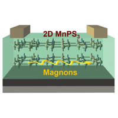

Journal Publications
 Key Publications
Key Publications

Wenyu Xing, Luyi Qiu, Xirui Wang, Yunyan Yao, Yang Ma, Ranran Cai, Shuang Jia, X.C. Xie, and Wei Han*
Physical Review X 9(1), 011026 (2019)

Hongrui Zhang, Yang Ma, Hui Zhang, Xiaobing Chen, Shuanhu Wang, Gang Li, Yu Yun, Xi Yan, Yuansha Chen, Fengxia Hu, Jianwang Cai, Baogen Shen, Wei Han, and Jirong Sun*
Nano Letters, 19, 3, 1605-1612(2019)

Wei Han*, YoshiChika Otani & Sadamichi Maekawa
npj Quantum Materials 3, 27 (2018)
Wei Yuan, Qiong Zhu, Tang Su, Yunyan Yao, Wenyu Xing, Yangyang Chen, Yang Ma, Xi Lin, Jing Shi*, Ryuichi Shindou, X. C. Xie*, Wei Han*
Science Advances 4: eaat1098 (2018)

Wenyu Xing†, Yangyang Chen†, Patrick M Odenthal, Xiao Zhang, Wei Yuan, Tang Su, Qi Song, Tianyu Wang, Jiangnan Zhong, Shuang Jia, X C Xie, Yan Li, and Wei Han*
2D Materials 4, 024009 (2017)
Qi Song†, Hongrui Zhang†, Tang Su, Wei Yuan, Yangyang Chen, Wenyu Xing, Jing Shi*, Jirong Sun*, and Wei Han*
Science Advances 3, e1602312 (2017)
Qi Song, Jian Mi, Dan Zhao, Tang Su, Wei Yuan, Wenyu Xing, Yangyang Chen, Tianyu Wang, Tao Wu, Xian Hui Chen, X. C. Xie, Chi Zhang*, Jing Shi* & Wei Han*
Nature Communications, 7: 13485 (2016)

Weifeng Zhang†, Wei Han†, See-hun Yang, Yan Sun, Yang Zhang, Binghai Yan, Stuart S. P. Parkin*
Science Advances, 2: e1600759 (2016)

Weifeng Zhang†, Wei Han†, Xin Jiang, See-Hun Yang & Stuart S. P. Parkin*
Nature Physics 11, 496–502 (2015).

Wei Han, R. K. Kawakami*, Martin Gmitra, and Jaroslav Fabian*
Nature Nanotechnology 9, 794-807 (2014).
Room East 404/504, Physics Building, No. 209 Chengfu Road, Haidian District, Peking University